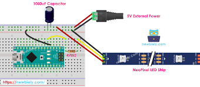

Learn how to control WS2812B addressable RGB LEDs. Unlike standard LEDs, each NeoPixel can be set to any color individually using just one data pin.
1. Concept and Description
In this project, we will learn how to control WS2812B addressable RGB LEDs, commonly known as NeoPixels. Unlike standard LEDs, each NeoPixel can be set to any color individually using just one data pin from the Arduino.
Understanding Addressable LEDs
Using the Adafruit NeoPixel Library
Controlling Color and Brightness
2. Components Needed
Arduino Uno Board
NeoPixel LED Strip (or Ring/Stick)
Jumper Wires
External 5V Power Supply (recommended for long strips)
470Ω Resistor (optional, for data line protection)
1000µF Capacitor (optional, for power protection)
3. Physical Montage (Wiring Instructions)

Connect the NeoPixel strip as follows:
5V to Arduino 5V (or external 5V +)
GND to Arduino GND (and external 5V -)
DIN (Data In) to Arduino Pin 6
Note: If using a large number of LEDs (more than 8-10), power the strip from an external 5V power supply, not the Arduino's 5V pin, to avoid damaging the board.
🔌 Wiring Diagram: 5V, GND, and Data Pin 6
4. The Code (Arduino Sketch)
Copy and paste the code below into your Arduino IDE. You must install the "Adafruit NeoPixel" library via the Library Manager first.
#include <Adafruit_NeoPixel.h>
#define PIN 6#define NUMPIXELS 8// Popular NeoPixel stick size// Initialize the NeoPixel library// Parameter 1 = number of pixels in strip// Parameter 2 = Arduino pin number (most are valid)// Parameter 3 = pixel type flags, add together as needed:// NEO_KHZ800 800 KHz bitstream (most NeoPixel products w/WS2812 LEDs)// NEO_GRB Pixels are wired for GRB bitstream (most NeoPixel products)
Adafruit_NeoPixel pixels(NUMPIXELS, PIN, NEO_GRB + NEO_KHZ800);
void setup() {
pixels.begin(); // INITIALIZE NeoPixel strip object (REQUIRED)
pixels.setBrightness(50); // Set brightness to about 1/5 (max = 255)
}
void loop() {
pixels.clear(); // Set all pixel colors to 'off'// The first NeoPixel is 0, second is 1, all the way up to the count of pixels minus one.for(int i=0; i<NUMPIXELS; i++) {
// pixels.Color() takes RGB values, from 0,0,0 up to 255,255,255
pixels.setPixelColor(i, pixels.Color(0, 150, 0)); // Moderately bright green color.
pixels.show(); // Send the updated pixel colors to the hardware.delay(500); // Pause before next pass through loop
}
}